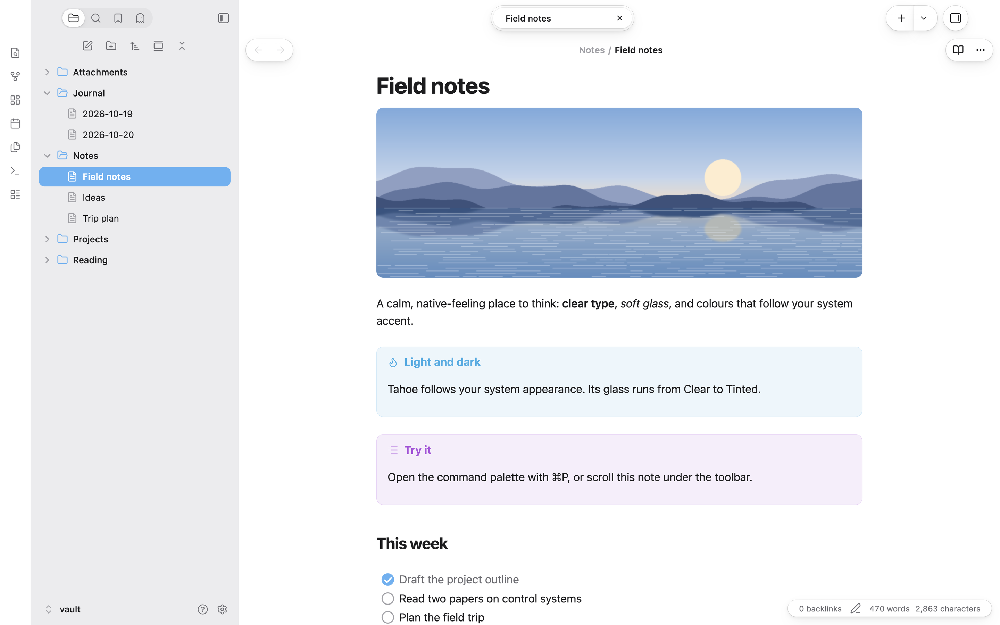
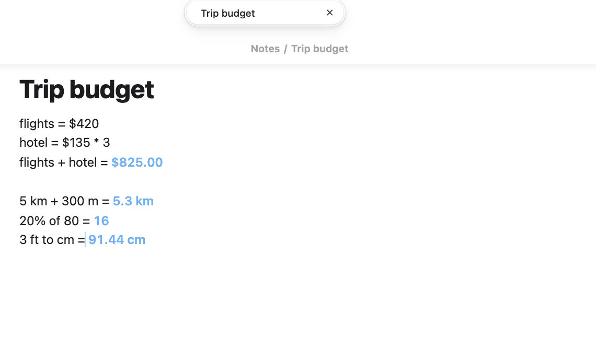
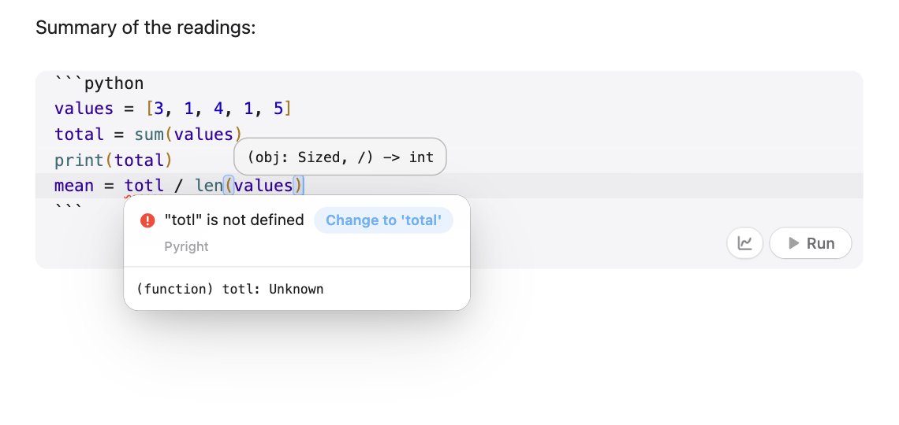
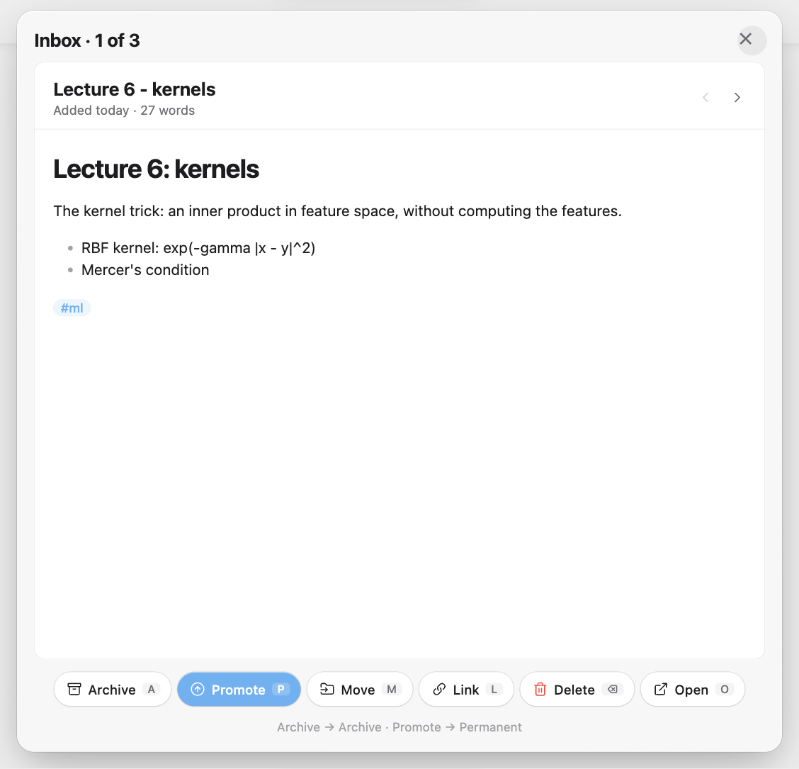
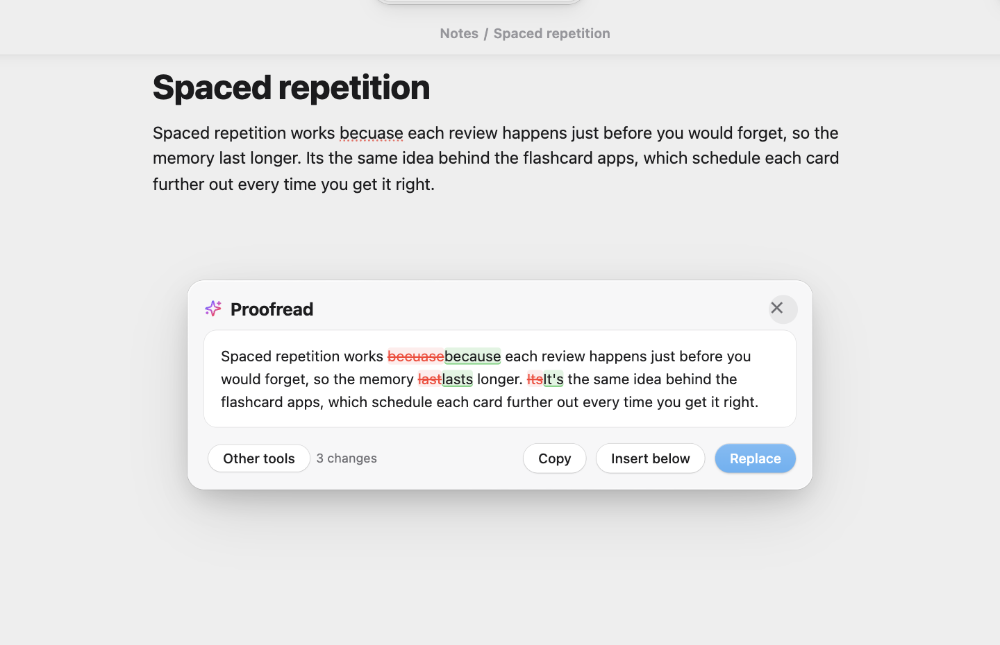
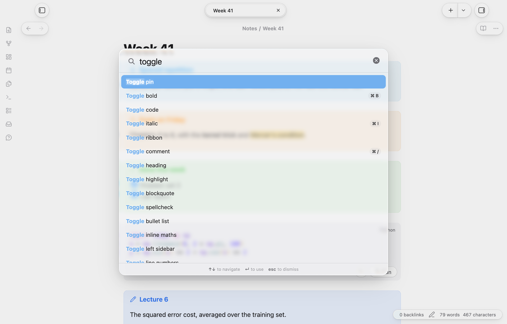

Tahoe
A clean, Mac-like theme in light and dark: coloured sidebar icons, glass toolbar capsules, a Spotlight-style command palette and settings laid out like System Settings.
A Mac-like theme and six plugins for Obsidian. They work on their own and fit together: run code in your notes, do maths as you type, get an IDE in code blocks, keep a vault tidy and ask your notes questions, with AI that stays on your Mac.
1038 plugin downloads, and the theme’s file downloaded 442 times. As of 2026-11-14.

A clean, Mac-like theme in light and dark: coloured sidebar icons, glass toolbar capsules, a Spotlight-style command palette and settings laid out like System Settings.

Run code blocks in place, like a notebook: Python with a debugger and variables view, MATLAB, C, C++, Swift and more on desktop, and Python on iPhone and iPad.

A calculator in your notes: type an expression ending in = and the answer appears, with variables, units, currency and dates.

An IDE in your code blocks: suggestions, checking as you type, quick fixes, language servers, formatting and local AI.

Keep a growing vault tidy: inbox triage, smart folders, coloured tags, link suggestions, a vault health check and literature notes.

On-device AI for your notes with Apple Intelligence or Ollama: ask your notes, related notes, link by meaning, writing help and a weekly review.

Real refraction for the theme's glass, with dispersion, glare and a pointer highlight, and a battery saver. macOS.
Short write-ups of the hardest parts.